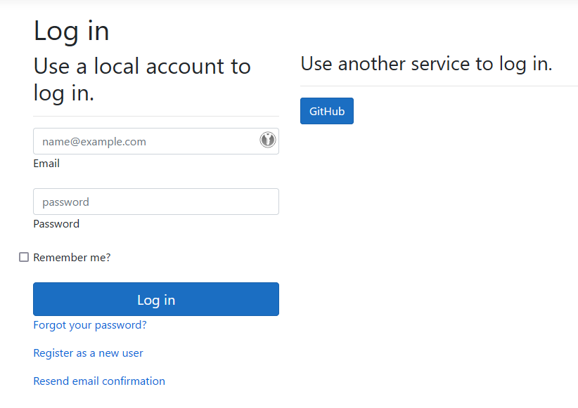

Integrating with a remote server instance
The OpenIddict client is a universal OAuth 2.0/OpenID Connect .NET client that can be used in both web applications (ASP.NET 4.6.1+ or ASP.NET Core 2.1+ required) or desktop applications (.NET 4.6.1+ or .NET 6.0+ required).
Most of the settings apply to both web and desktop applications but interactive flows like the code or implicit flows require a specific integration depending on the type of application:
Implement a non-interactive OAuth 2.0 client in any .NET application:
Non-interactive flows like the resource owner password credentials (ROPC) or client credentials are implemented the same way in web and desktop applications. If you want to use a non-interactive flow like the client credentials flow, you'll need to:
Have an existing project or create a new one: using the .NET generic host is recommended but not mandatory for non-interactive flows. In any case, you'll need to use dependency injection (
Microsoft.Extensions.DependencyInjectionor another DI container).Update your
.csprojfile to reference the latestOpenIddictpackage:<PackageReference Include="OpenIddict" Version="5.4.0" />Configure the OpenIddict client services in
Program.cs(orStartup.csif you use the regular ASP.NET Core web host):services.AddOpenIddict() // Register the OpenIddict client components. .AddClient(options => { // Allow grant_type=client_credentials to be negotiated. options.AllowClientCredentialsFlow(); // Disable token storage, which is not necessary for non-interactive flows like // grant_type=password, grant_type=client_credentials or grant_type=refresh_token. options.DisableTokenStorage(); // Register the System.Net.Http integration. options.UseSystemNetHttp(); // Add a client registration with the client identifier and secrets issued by the server. options.AddRegistration(new OpenIddictClientRegistration { Issuer = new Uri("https://localhost:44385/", UriKind.Absolute), ClientId = "service-worker", ClientSecret = "388D45FA-B36B-4988-BA59-B187D329C207" }); });Use
OpenIddictClientServiceto retrieve an access token from the remote server:var service = provider.GetRequiredService<OpenIddictClientService>(); var result = await service.AuthenticateWithClientCredentialsAsync(new()); var token = result.AccessToken;
Implement an interactive OAuth 2.0/OpenID Connect client in an ASP.NET Core application:
To implement an interactive OAuth 2.0/OpenID Connect client in an ASP.NET Core application, the simplest option is to clone one of the official samples from the openiddict-samples repository.
If you don't want to start from one of the recommended samples, you'll need to:
Have an existing project or create a new one: when creating a new project using Visual Studio's default ASP.NET Core template, using individual user accounts authentication is strongly recommended as it automatically includes a default ASP.NET Core Identity UI based on Razor Pages, that automatically handles the user creation process or external login integration in a transparent way.
Update your
.csprojfile to reference the latestOpenIddict.AspNetCoreandOpenIddict.EntityFrameworkCorepackages:<PackageReference Include="OpenIddict.AspNetCore" Version="5.4.0" /> <PackageReference Include="OpenIddict.EntityFrameworkCore" Version="5.4.0" />Configure the OpenIddict core services in
Program.cs(orStartup.cs, depending on whether you're using the minimal host or the regular host):Important
Configuring a database is required because the OpenIddict client is stateful by default: it uses the
IOpenIddictTokenStore<T>service to store the payload of the state tokens it creates – to protect the callback stage from CSRF/session fixation attacks – and enable automatic state token redeeming (unlike the ASP.NET Core OAuth 2.0 or OpenID Connect handlers, the OpenIddict client prevents state tokens from being used multiple times to mitigate authorization response/state token replay attacks).services.AddDbContext<ApplicationDbContext>(options => { // Configure Entity Framework Core to use Microsoft SQL Server. options.UseSqlServer(Configuration.GetConnectionString("DefaultConnection")); // Register the entity sets needed by OpenIddict. // Note: use the generic overload if you need to replace the default OpenIddict entities. options.UseOpenIddict(); });services.AddOpenIddict() // Register the OpenIddict core components. .AddCore(options => { // Configure OpenIddict to use the Entity Framework Core stores and models. // Note: call ReplaceDefaultEntities() to replace the default entities. options.UseEntityFrameworkCore() .UseDbContext<ApplicationDbContext>(); });Configure the OpenIddict client services. Here's an example enabling code flow support and adding the GitHub integration:
services.AddOpenIddict() // Register the OpenIddict client components. .AddClient(options => { // Note: this sample only uses the authorization code flow, // but you can enable the other flows if necessary. options.AllowAuthorizationCodeFlow(); // Register the signing and encryption credentials used to protect // sensitive data like the state tokens produced by OpenIddict. options.AddDevelopmentEncryptionCertificate() .AddDevelopmentSigningCertificate(); // Register the ASP.NET Core host and configure the ASP.NET Core-specific options. options.UseAspNetCore() .EnableRedirectionEndpointPassthrough(); // Register the System.Net.Http integration. options.UseSystemNetHttp(); // Register the Web providers integrations. // // Note: to mitigate mix-up attacks, it's recommended to use a unique redirection endpoint // URI per provider, unless all the registered providers support returning a special "iss" // parameter containing their URL as part of authorization responses. For more information, // see https://datatracker.ietf.org/doc/html/draft-ietf-oauth-security-topics#section-4.4. options.UseWebProviders() .AddGitHub(options => { options.SetClientId("c4ade52327b01ddacff3") .SetClientSecret("da6bed851b75e317bf6b2cb67013679d9467c122") .SetRedirectUri("callback/login/github"); }); });Make sure the ASP.NET Core authentication middleware is correctly registered at the right place:
app.UseDeveloperExceptionPage(); app.UseRouting(); app.UseCors(); app.UseAuthentication(); app.UseAuthorization(); app.UseEndpoints(options => { options.MapControllers(); options.MapDefaultControllerRoute(); });Add an authentication controller responsible for handling the OAuth 2.0/OpenID Connect callbacks:
[HttpGet("~/callback/login/{provider}"), HttpPost("~/callback/login/{provider}"), IgnoreAntiforgeryToken] public async Task<ActionResult> LogInCallback() { // Retrieve the authorization data validated by OpenIddict as part of the callback handling. var result = await HttpContext.AuthenticateAsync(OpenIddictClientAspNetCoreDefaults.AuthenticationScheme); // Important: if the remote server doesn't support OpenID Connect and doesn't expose a userinfo endpoint, // result.Principal.Identity will represent an unauthenticated identity and won't contain any user claim. // // Such identities cannot be used as-is to build an authentication cookie in ASP.NET Core (as the // antiforgery stack requires at least a name claim to bind CSRF cookies to the user's identity) but // the access/refresh tokens can be retrieved using result.Properties.GetTokens() to make API calls. if (result.Principal is not ClaimsPrincipal { Identity.IsAuthenticated: true }) { throw new InvalidOperationException("The external authorization data cannot be used for authentication."); } // Build an identity based on the external claims and that will be used to create the authentication cookie. var identity = new ClaimsIdentity(authenticationType: "ExternalLogin"); // By default, OpenIddict will automatically try to map the email/name and name identifier claims from // their standard OpenID Connect or provider-specific equivalent, if available. If needed, additional // claims can be resolved from the external identity and copied to the final authentication cookie. identity.SetClaim(ClaimTypes.Email, result.Principal.GetClaim(ClaimTypes.Email)) .SetClaim(ClaimTypes.Name, result.Principal.GetClaim(ClaimTypes.Name)) .SetClaim(ClaimTypes.NameIdentifier, result.Principal.GetClaim(ClaimTypes.NameIdentifier)); // Preserve the registration identifier to be able to resolve it later. identity.SetClaim(Claims.Private.RegistrationId, result.Principal.GetClaim(Claims.Private.RegistrationId)); // Build the authentication properties based on the properties that were added when the challenge was triggered. var properties = new AuthenticationProperties(result.Properties.Items) { RedirectUri = result.Properties.RedirectUri ?? "/" }; // If needed, the tokens returned by the authorization server can be stored in the authentication cookie. // // To make cookies less heavy, tokens that are not used are filtered out before creating the cookie. properties.StoreTokens(result.Properties.GetTokens().Where(token => token.Name is // Preserve the access, identity and refresh tokens returned in the token response, if available. OpenIddictClientAspNetCoreConstants.Tokens.BackchannelAccessToken or OpenIddictClientAspNetCoreConstants.Tokens.BackchannelIdentityToken or OpenIddictClientAspNetCoreConstants.Tokens.RefreshToken)); // Ask the default sign-in handler to return a new cookie and redirect the // user agent to the return URL stored in the authentication properties. // // For scenarios where the default sign-in handler configured in the ASP.NET Core // authentication options shouldn't be used, a specific scheme can be specified here. return SignIn(new ClaimsPrincipal(identity), properties); }Once correctly configured, the GitHub provider should appear in the list of supported external providers:

Implement an interactive OAuth 2.0/OpenID Connect client in a desktop application:
To implement an interactive OAuth 2.0/OpenID Connect client in a desktop application, the simplest option is to clone one of the official samples from the openiddict-samples repository.
For more information on how to use the OpenIddict.Client.SystemIntegration package on Linux and Windows, read
Introducing system integration support for the OpenIddict client.